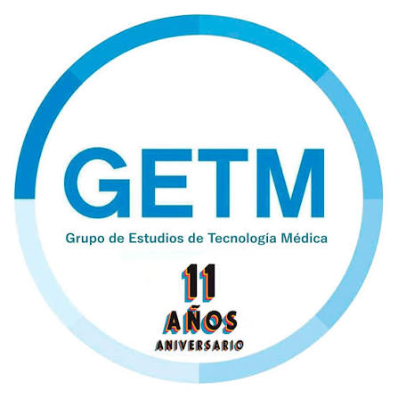

GETM · CARDIO
♥
72 BPM
✦ 24 créditos
DIPLOMADO INTERNACIONAL
Fisioterapia Cardiorrespiratoria
Especialización aplicada para profesionales de las ciencias de la salud.
Consultar programa
GETM.Grupo de Estudios de Tecnología Médica HablemosConvertimos el conocimiento en nuevas posibilidades. Explora diplomados, capacitaciones y experiencias académicas para crecer en las ciencias de la salud.
Años de trayectoria
Aprendiendo, compartiendo y formando comunidad.
En GETM acercamos la formación especializada a los profesionales y estudiantes de las ciencias de la salud a través de talleres, seminarios, congresos, diplomados y experiencias académicas.
Creemos en aprender con propósito: conectar ideas, compartir experiencias y llevar cada descubrimiento a la práctica profesional.
Conoce algunas de nuestras actividades y encuentra tu siguiente oportunidad de formación.
Especialización aplicada para profesionales de las ciencias de la salud.
Consultar programaUna mirada práctica a los factores que influyen en el análisis clínico.
Consultar actividadCriterios clave para una práctica profesional segura y efectiva.
Consultar actividadUn ecosistema de experiencias, espacios y servicios para acompañar tu desarrollo.
Especialización y programas académicos con enfoque aplicado.
↗Aprendizaje práctico para seguir actualizándote.
↗Intercambio de conocimientos con profesionales de distintos países.
↗Acompañamiento a proyectos de investigación académica.
↗Consultorios, salas y ambientes para profesionales independientes.
↗Servicios y beneficios vinculados a nuestra comunidad de salud.
↗Hazte miembro de una comunidad que conecta personas, experiencias y oportunidades para seguir creciendo.
Una muestra visual de las áreas que han formado parte de nuestro recorrido académico.
¿Tienes otra consulta? Nuestro equipo puede ayudarte a encontrar la información que necesitas.
Escríbenos por WhatsAppDiplomados, cursos, talleres, seminarios, conferencias y actividades académicas vinculadas a las ciencias de la salud.
GETM desarrolla experiencias presenciales y por plataformas como Zoom. Consulta la modalidad específica de cada actividad.
Incluye descuentos en actividades, sorteos de becas y beneficios en espacios profesionales y servicios de laboratorio.
Selecciona la actividad de tu interés o escríbenos por WhatsApp para recibir orientación.
Formación, comunidad y oportunidades. Conversemos sobre lo que te gustaría aprender.
Escríbenos por WhatsApp